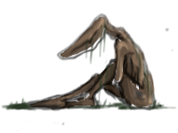
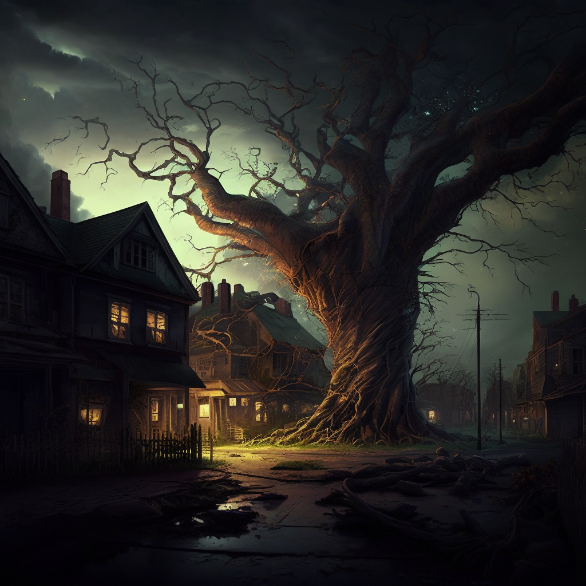
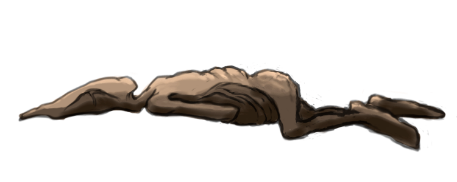
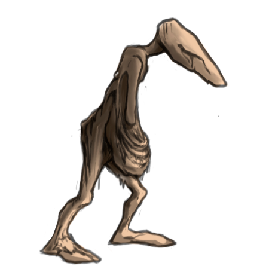

Надо всего лишь пойти в темноту. В корнях слышатся шаги беспалых ног. То тут, то там мерещатся взгляды безглазых уродцев.

Корневой Мор крепнет. Исполинские отростки маячат над землёй, покачиваются под дыханием слабого
ветра. Всё больше Неутешенных теряют рассудок, бесцельно слоняясь по окрестностям в
поисках Бледного Света. Они взывают к нему, умоляют озарить им путь.
Вокруг по-прежнему темно. И лишь один наводящий тоску звук доносится как будто бы отовсюду. Шлёп... шлёп...

Привычный порядок вещей нарушен, когда король ни с того, ни с сего бросает свой насест и спасается бегством. Лучше не соваться на безлюдный тракт, не выглядывать из окна таверны. Спрятанный в ночном тумане, пей своё вино и не думай о том, что происходит снаружи.
